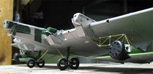

Images and text Copyright � 2008 by Mike Glinski
All images in this article are linked to larger pictures, click on any small image to view the full size picture.
Zveno 7 utilizing the 1/72 ICM Tupolev TB-3 and the 1/72 ICM I-16
Images and text Copyright � 2008 by Mike Glinski
All images in this article are linked to larger pictures, click on any small image to view the full size picture.
History
Parasite aircraft is a concept that has intrigued most countries at least once in the past. Most forays into the application of linking and unlinking aircraft in mid-air never leave the drawing board, and with the advent of aerial refueling the idea of extending the range of an aircraft by strapping it to another are quickly falling to the wayside. Occasionally, however, the initiative, technology, and funding exists to bring the idea of parasite aircraft off of paper and into the real world. The most comprehensive of these projects happened in 1930�s Russia, under the direction of Vladimir Vakhmistrov.
The project, going under the name �Zveno�, consisted of nine configurations and six different aircraft.
* Zveno 1: Tupolev TB-1 with two Tupolev I-4s mounted on top of the wings. Successfully demonstrated the ability of a large aircraft to fly with smaller aircraft attached.
* Zveno 2: Tupolev TB-3 with three Polikarpov I-5s mounted above, one on each wing and one above the fuselage. Successful, but impractical.
* Zveno 3: Proposal to fit two parasites under the wings instead of above. Proposed parasites were Grigorovich IP-1s, but a single Grigorovich I-Z mounted under the fuselage was used instead. Accident resulted in the death of I-Z pilot Alexei Korotkov, the only tragedy of the program.
* Zveno 4: Proposal to fit the TB-3 with a parasite which couldn�t detach, with wings, tail, and all control surfaces removed, to help the composite get into the air. This may have influenced the fuselage-mounted push-pull nacelles of the later TB-4 and ANT-20 Maxim Gorky.
* Zveno 5: Single I-Z mounted via trapeze under the fuselage of a TB-3. Several successful hookups were achieved without major difficulty.
* Zveno 6: Two Polikarpov I-16 mounted under the wings of a TB-3. These could only detach, not re-attach in flight. More practical that the over-wing installation of Zveno 2. Parasites shared fuel and oil with the mothership.
* Zveno �Aviamatka�: Culmination of Zveno 2, 5, and 6. Five fighters were attached to one TB-3, two I-5s above the wings, two I-16s below, and one I-Z linking up in flight. Flight was successful, but viewed as a stunt and disregarded.
* Zveno 7: Two I-16s under a TB-3 linked to retractable trapezes, which allowed the I-16s to detach and re-attach in flight. Flew successfully for a number of flights, but deemed too difficult to be practical for several reasons. Turbulence under the wings of the TB-3 was worse than under the fuselage, and the I-16 was a less stable aircraft than the I-Z. The trapeze was not protected from the props of the I-16s, and some link-ups were so violent that the rigs on both aircraft sustained damage. Work finally stopped with the onset of WWII.
* Zveno SPB: Basically Zveno 6 with updated equipment. Allowed the I-16s to lift bombs they would otherwise be unable to, and doubled the range of the fighters, now converted to dive-bombers. Only parasite used in combat. Had impressive success with surprisingly low attrition rate, even more surprising when one remembers that, at this point, both the TB-3 and I-16 were obsolete equipment.
The program as a whole had many proposed uses, early ones being a sort of flying aircraft carrier, allowing specialized carrier aircraft (without bombs) to carry a squadron of fighters along with a squadron of bombers all the way to a target. Later ones focused more on individual bomber defense and finally as high-speed dive bombers. Vakhmistrov continued to develop parasite proposals, like a Petlyakov Pe-8 bomber with two MiG 3s. None of these plans reached fruition.
Demonstrating nearly every aspect of parasite aircraft operation, the entire Zveno program stands as the ultimate example of the linking of aircraft in flight, and one worthy of being remembered in plastic form.
The Model
Those who have seen my work know that I have a definite interest in off the wall subjects. They would be right. Because of this I have known about the Zveno project for a while now. Ever since I saw my first grainy black and white photograph of a TB-3 with two small I-16s slung underneath, I�ve wanted to build one in miniature. As the years went on, I did my best to gain as much information as possible, through obscure web pages in Russian, out of print magazine articles, and existing models of various Zveno configurations, until I was comfortable enough to begin a model for myself. What finally put me over the edge was a trip to my local hobby store. While perusing the shelves I saw ICM�s 1/72 Tupolev TB-3 for the comparative steal of only $20. How could I refuse?
After I had my hands on a TB-3 all that was left was a couple of I-16s and begin construction- or so I thought. Little did I know that I needed one more thing to make a truly accurate Zveno� but more about that later.
For my model in particular I wanted to build something different, something that hadn�t been done before. One of the most popular builds is Zveno 6, where two I-16s were slung under a TB-3 with fixed pyramidal struts. This configuration has actually been released in kit form, albeit under the name �Zveno SPB�. While the SPB existed and was used operationally in WWII, the kit is incorrect- the TB-3 is an early version not used in WWII. The kit cannot be called a �Zveno 6� either, because the I-16s are late-model versions- correct for the SPB, but not for �Zveno 6�. One build I haven�t seen done, though, was Zveno 7. Using a TB-3 and two I-16s, it was meant to be the ultimate parasite proof of concept. While the I-16s in �Zveno 6� could only detach from their mothership, the I-16s in �Zveno 7� were intended to be able to re-attach in flight using a retractable trapeze slung under each wing of the large bomber. It was a kit that was not unreasonable to build, but was something different which few people had seen before. For me, it fit the bill.
Throughout this build I have and plan to draw heavily on two other builds in particular. Aleksandar Sekularac�s amazing Zveno 6 is my main inspiration for beginning this build and Ken Duffy�s �Aviamatka� (a TB-3 with five fighters attached at once) build is something that simply has to be seen to be believed. Check the references at the end of the article for links.
The Kit- ICM Tupolev TB-3
Much ink has been spilled over ICM�s kit of the Tupolev TB-3. The only kit currently available of the TB-3 in any scale, it is the subject of a love-hate relationship with any modeler who is lucky (or unfortunate) enough to cross one. Supporters laud the finely engraved corrugations over every fuselage piece and multitude of detail pieces for nearly every aspect of the aircraft. Detractors say that the level of detail given in the kit is TOO much, and that the kit is needlessly over engineered. A quick glance at the sprues lends credence to both arguments. While the pieces are delicate and jam-packed with detail, it is somewhat difficult to determine where the pieces go. There are no discernable fuselage halves, nor are there easy to find wing halves. This is because there are none. The wing is made up of perhaps ten pieces, the fuselage even more. The kit goes together less like a typical plastic model and more like a balsa flyer, with flat exterior walls attaching to interior ribs and formers. This complexity is made worse by the multitude of corrugations. Nothing can be puttied and sanded from the outside, as doing so would eliminate the surface detail.
Why would ICM do this? Why would any company make a kit with such dedication to detail so complex to build? While I don�t know for sure, I have a theory. While the box that the kit came in is rather large, the sprues are quite small. Comparing the sprue sizes to another ICM kit (an I-16 I had built previously) they are remarkably similar. This leads me to believe that ICM can only create sprues of a certain size, one which is smaller than main kit components of the rather large TB-3, like full fuselage or wing halves. This means in order to produce a kit like the TB-3, the complex breakdown was required.
But I digress. It is time to look at some actual work, I think.
Construction Begins
After the wonderful adventure of parts examination, it should surprise no one that this is not a typical kit. That being said, construction of it begins in a non-typical area as well. 99% of aircraft kits begin in the cockpit. Not so here. While I technically could have started in the cockpit, it made a bit more sense to begin with the wing instead. The kit logically starts at the center of the airplane with two spars, everything afterwards being built off of that. Besides, if I screwed the wing up royally, it wouldn�t make sense to go any further.
First up was the complex interior structure of the wing. In addition to the aforementioned spars the kit provides a number of ribs that tie the spars together and provide support for the wing panels. These were assembled with plastic cement, which provided a strong joint while maintaining some flexibility (which allowed me to constantly tweak the entire wing structure as I assembled it).
Once this was more or less finished, I started to attach the outer wing covering. I started with the largest piece, the center underside. Surprise surprise! It was warped. It was a story that was to be repeated for the rest of the wing. Sighing, I tacked down the nicest-fitting part of the panel to the frame, waited for it to dry, then proceeded to glue, bend, and clamp the areas which were the fit was not so nice. Using small plastic tabs glued to the interior of each panel to aid alignment I did the same thing with the rest of the underside of the wing. The outer upper wing panels gave me the most trouble here. They had to conform to a sharply curved surface, yet each was nearly flat. I repeated the tack-down, bend, clamp, glue, and pray procedure again here and (thankfully) the parts held. Working back towards the center on the top of the wing, the rest of the parts went in with less hassle. The multi-part ailerons also went in without any arguments, although a few had some nasty sink marks I will eventually need to deal with. The biggest offenders here were the rear inboard trailing edges and the leading edges between the two engines on each wing. The trailing edges did not line up with the corresponding wing panels at all, leaving huge gaps and steps that I needed to fix. I did, but the joints still don�t look too nice. I�ll probably be tinkering with them the rest of the build. The leading edges went down nice enough, but when viewed from the front they give the wing a kink when compared to the out wing leading edge. This should be straight, but isn�t. This is a problem I�ve seen with other built-up TB-3, so it may be a problem with the kit. I can�t for the life of me find any way to fix it, though, so I guess it�s something I�m going to live with.
So far this is where the build stands. The reason for this is because I�m still waiting on a rather crucial component I�ve forgot about until now. In almost all photos of the TB-3 the tandem wheels of the landing gear have spoke wheels, like a bicycle. The kit, however, molds the wheels with their solid covers in place. Thankfully Eduard provides a photoetch set that includes (among other things) replacement spoke wheel centers. I ordered a set off the internet, but they haven�t arrived yet. I hesitate to start work on the cockpit before the PE arrives. Besides, this is as nice a place as any to take a breather.
There are still a few things I need to locate in addition to the photoetch set. I need to find some suitable wire for the trapeze assemblies, and then determine the best way to construct them using that wire. Then there�s the matter of the I-16s. I have two kits I plan to use, but to get them to Zveno-worthy status will require a bit more work than simply putting them together straight from the box. These, of course, are only problems that I know about. I�m sure that there will be several issues down the road that will pop up that I won�t even see coming. Ah, well. I�ll burn those bridges when I get there.
Keep an eye out for occasional updates, as I�ll be sure to keep everyone informed as this build progresses.
References:
�Combat Composites� by Vladimir Lesnitchenko. Published in the November/December 1999 �Air Enthusiast� magazine, issue 84.
Zveno 6 by Aleksandar Sekularac
Ken Duffy�s �Avitamatka�
8/16/08
The Fuselage
With the arrival of the Eduard photoetch detail set I was finally able to continue construction on the TB-3. The highlight of the set is, as said before, the spoke wheels, but it definitely does not skimp on other areas. Approximately half of the set is dedicated to the cockpit, and it really serves to dress up this extremely visible area. In addition, nearly all of the detail pieces are concentrated in the open main cockpit, with very little being wasted in the forward, covered bomb aimer�s station.
The fuselage is built up much like the wing- flat structural pieces over which is placed a corrugated covering. In practice, however, building up the fuselage was almost the opposite of building the wing. The wing consisted of a lot difficult work that, in the end, resulted in an assembly where most of the work was invisible. The fuselage, on the other hand, went together relatively painlessly and in the end, most of it is quite visible.
Work began in the cockpit. This was accomplished easily, with photoetch replacing certain kit parts. The instrument panel is provided as a film insert for the dials sandwiched between the kit piece (turned around to provide a flat surface) and a PE front. It holds the award for my most convincing instrument panel ever. New rudder pedals are also provided, but these are much less visible. Seatbelts are an extremely welcome addition. I kept detailing to a minimum in the forward and aft compartments. Despite the profusion of windows, little is visible.
On the subject of windows, this was the one major replacement I did on this area of the kit. The kit clear parts are rather bad. Every window is too large for the holes in the fuselage sides, and all are extremely distorted. I had some clear acetate lying around from another project, and it was a simple matter to cut up some new windows. The only part from the kit is the complex front glazing, as I doubt I would�ve been able to a better job scratch building a replacement.
Once the cockpit was finished I added the sidewalls and set the front section aside. Work on the rear fuselage was similar to the front save that it went much faster. This was for several reasons; a lack of photoetch, lower parts count, and a single color scheme allowed for a quick build. Once both front and rear halves were finished they were joined together over the wings in one of the trickiest maneuvers of the build so far. I managed to break one side of the forward fuselage and superglue myself to the TB-3 several times. In the end everything turned out all right. Not perfect, mind you; but all right.
The upper decking was added next. I began at the front and worked my way back; this way ensuring each part was lined up correctly. Finally, I added the tail, which is perhaps one of the most interesting areas of the kit. A huge triangular gap is included in the vertical tail surface where the horizontal tail slots through. As a result the horizontal surfaces only have three small points of contact with the fuselage- one in the back and two up front- instead of across the entire span of the tail, as is normal. I can only assume the space (present on the real aircraft) was used for trimming purposes. There is still a bit of rigging that needs to be added later, and I may make it functional to help hold the tail in place.
Service Platform
Another highlight of the Eduard set is the multi-piece folding service platform next to engine No. 2. The real aircraft had eight of these, one on each side of each engine. When folded it formed the leading edge of the wing. Eduard gives you the option of posing this open, and it is a real giveaway of a TB-3 model utilizing the PE set. The platform is a small kit in itself. Half a dozen pieces fold up and are then glued together creating this little masterpiece. That�s the theory, anyway. When the set first arrived, this was the first thing I tried to build. It was the most difficult part of the PE set, so I was eager to get it out of the way. In the event I managed to screw it up, I would still be able to finish the kit.
Thankfully I never needed to find this out. With some careful gluing the platform came out looking wonderful. Next, I cut out a section of the leading edge of the wing and replaced it with some structural detail (also provided by Eduard). Once finished, I set the platform aside until after I painted the main fuselage. Painting wouldn�t happen for a while, though. First, I had one or two other details to tend to�.
What�s Next
Up until now this review has been mostly about building a TB-3, despite being titled �Zveno 7�. I�m happy to say that very soon that will be changing. I�ve set the fuselage aside for the time being to focus on what I consider the most difficult portion of the build so far. I won�t bore you with details. I�ll just show you instead. Suffice to say that more information will be coming� in the next update.
1/1/2009
Trapezes
Zveno 7 was fitted with a variant of the swinging trapezes used on earlier versions of the project. One was carried on the underside of each wing of the TB-3 and was attached by a swinging hinge directly behind engines 1 and 4. A pyramid on each I-16 hooked to the other end, and the hinge allowed the �Rata� to swing up into the safety of the wings.
The trapezes on my project were the most difficult single scratchbuild of the model. I used brass wire to construct them. I knew early on that brass superglued to brass wasn�t going to be strong enough to support the stresses of the I-16s, so all of the major connections were soldered. After this all the diagonal braces, which are mainly cosmetic, were superglued into place.
One end was allowed to pivot by using brass tube instead of wire, like a hinge. A number of holes were then drilled to the underside of the TB-3�s wing to accept the (mostly) finished trapezes and other various support structures. These are going to be added later, after painting.
Landing Gear
At this point I added a few more details to the TB-3 itself. In this case it was the landing gear struts. I was a bit disappointed with the kit parts. Of the six pieces, all suffered from sink marks, two of them being so bad they looked like Swiss Cheese. After filling and sanding everything, I discovered that the main legs were the wrong length and angle. These needed to be replaced with brass rod. On the plus side, this strengthened the landing gear, allowed me to bend it a bit to adjust it, and eliminated a problem with sagging landing gear I�d seen on other TB-3 builds.
I�m happy to report that construction of the bogeys went much smoother. Not only did all THESE parts fit together without a problem, but the PE spokes went in the wheels like a dream. At that I needed to do was drill out the center of the solid wheels, use a piece of plastic strip to blank off the opening, and glue in the spokes. These assemblies were then slipped onto the brass rods. It�s my hope I will be able to keep them free swiveling.
It was at this point that I set the TB-3 aside again to concentrate on yet another aspect of this project, the Polikarpov I-16s.
ICM Polikarpov I-16
ICM�s 1/72 I-16s are probably the best, most detailed �Rata�s in the scale. I had built one before and was impressed enough to build two more. There�s only one issue with using them, though, the I-16s used in project Zveno were early Type 5s. ICM�s represent later Type 18s. I needed to backdate them. This involved a number of minor, but important, details.
-Cowling. The Type 5 has a generally �cleaned up� cowl when compared to the Type 18. Small vents on the front and gun fairings up top needed to be removed.
-Exhausts. A large exhaust on the kit needs to be filled in and several small exhausts drilled into the underside.
-Canopy. The open canopy of the Type 18 needs to be replaced with a closed sliding canopy using on the Type 5.
-Spinner. The prop spinner needs to more pointed than what�s given in the kit.
-Wings. The ailerons need to extend closer to the fuselage. (In addition, the rib structure of the wings is different between the two. To me, though, this is a minor detail that 90% of people will miss even if they know to look for it and changing it, frankly, wouldn�t be worth the effort.)
you may click on these small images to view larger pictures
Construction started with the wonderfully detailed engine. I�m gong to leave to cowl open on one of the fighters to show off all the hard work. On this same aircraft I�m going to open the side panels of the cockpit to make it a bit more visible. Compared to the complex Tupolev, the I-16 s went together like a breeze.
Speaking of the cockpit, that area came next. The only alterations here were tape seat belts and a seat back cushion make from sculpted epoxy putty. Within one day both fuselages were closed up and the wing attached.
I also altered a few details, mostly around the cowl and exhaust areas. I sanded off the aforementioned details and filled in the lower exhaust outlets. It�s at this point where I stand right now.
What does the future hold? Well, I can�t do much more until the I-16s are painted and finished. Once they�re done I can use them to line up some of the TB-3 support structure then get THAT plane painted. Then it�s just some details, and then it�s close to being done.
Wait, when am I going to build up those engines for the TB-3? �
6/15/2009
I-16s (continued)
Final construction on ICM�s I-16s proceeded without any major hitches. After a quick shot of primer, all that was required was a bit of filling and sanding around the wing/fuselage joint and cowl. This was easily taken care of, as the primer tends to fill in very minor scratches. That way, polishing wasn�t something I needed to deal with.
The paint scheme for the two fighters would be a standard AII Green over Pale Blue. I�m not the kind of guy who gets incredibly picky with the colors used on his models. To me, if the color is close to the correct shade, I�ll use it.
As a result, I used Model Master Acrylic RLM 65 to represent the Pale Blue undersides (mainly because I had a full jar of it sitting on my bench). For the upper surfaces I used MM Acrylic Green Zinc Chromate. It�s a bit lighter than the green I�ve used for some of my other Russian subjects, but seems to better match the shade used by the VVS (Soviet Air Force) in the inter-war period. The cowls were then painted flat black- it is supposed to be gloss, but that will be taken care of with a later coat of Future.
Having built an ICM I-16 before, I knew to be wary of the decals. These were no different. While thin, most were also rather brittle. Even being careful I managed to break several decals. Thankfully these parasites were rather bland marking-wise- a full set of red stars would do it. These went down with only a little fuss in a small puddle of Future. There was still the issue of finishing coats of clear gloss and clear flat to worry about, but this could wait until after my next step. With both fighters colored and marked, I was able to tackle the most complicated part of the build- the arresting gear installation.
Trapezes (continued)
Trapeze construction began with the rather simple pyramid structures on each I-16. This was accomplished by drilling the necessary holes in each fighter and attaching suitably sized brass rod into each. On the apex of each I soldered a ring with a small notch cut out. This way I could hang and remove each parasite as I saw fit. Unfortunately, this presented me with my first problem.
The way the pyramid is positioned, the resulting model is very tail-heavy. In the real thing, the heavy engine countered this. Not so with my models. The ideal solution would be to add nose weight into the cowl. The open-cowl fighter made this fix not possible. My next idea was to replace the kit spinner with a solid metal weight. This also failed- the spinner simply wasn�t large enough to encompass the required weight. The answer I eventually hit upon was to solder a short length of tube to the I-16s and (in order to attach it to the trapezes) cut a small notch in the TB-3 wing trapezes. The only downside to this was to take each fighter on and off required a portion of the swinging trapeze to bend outward. As I don�t want this to break off, I�m going to limit my attaching and re-attaching of the I-16s to as little as possible.
Once this was solved, I went back to the TB-3. Rigging up a jig of sorts (with various paint jars and junk on my bench) I leveled out the TB-3 and positioned the swinging trapezes perpendicular to it. In this step (and all the others that follow) it was important to keep everything level, square, and lined up. That way, each I-16 would appear symmetrical on the finished model. Once I was happy, the swinging trapezes were permanently glued to the bomber.
I debated whether or not to attach the trapezes before or after painting. I decided to paint afterward. True, it may be a bit more difficult to get the paint into each crevasse once all the struts are on, but with the amount of supports I needed to add, it would be too easy to mess up a good paint job and have to re-paint anyway.
 Next I needed to find a way to secure the trapezes in the �up and locked� position. To this end, I took a bit of brass rod and fitted it into a short length of brass tube. One end was bent into a hook and the other was smashed with a pair of pliers, deforming it enough that it wouldn�t slip out of the tube. The tube was then glued into a hole in the TB-3 wing. The hook inside was allowed to rotate- this way, when I want to drop the trapeze, it�s a simple matter of spinning the hook around.
Next I needed to find a way to secure the trapezes in the �up and locked� position. To this end, I took a bit of brass rod and fitted it into a short length of brass tube. One end was bent into a hook and the other was smashed with a pair of pliers, deforming it enough that it wouldn�t slip out of the tube. The tube was then glued into a hole in the TB-3 wing. The hook inside was allowed to rotate- this way, when I want to drop the trapeze, it�s a simple matter of spinning the hook around.
Next up were the three pyramids that stabilized the I-16s when retracted. The rear pyramid was simple (as the correct position of the I-16s was already locked in). The other two wing mounts were a bit more difficult. For the outboard set, three lengths of brass rod were fitted into three holes drilled into the wing. These were then glued with slow-setting superglue, and before the glue had time to set the correct length was determined by leveling out the wings of the correct parasite. The inboard pyramid is attached to the swinging trapeze. Superglue here was out (as it�s too weak on a brass-to-brass joint), as was soldering (as I didn�t want to risk breaking apart the lined-up and glued-in trapeze). The answer? JB-Weld! So long as kept in tiny quantities, it did the trick nicely.
The final bit added was a small support pyramid to the front of the trapeze. While serving as the main attachment point for the trapeze on the real thing, on my model it�s purely cosmetic. With that, the most complicated part of the build was finished. Only one small detail stood between me and the paint shop.
TB-3 Engines

The engines and cowls on the TB-3 are built up much like the rest of the kit- square assemblies constructed out of flat panels. The rear radiator faces were dressed up with Eduard PE details. Overall, each went together with a minimum of fuss. Unfortunately, the engines are probably the weakest part of this kit. Not only are the engines themselves quite basic, but the thickness of the cowl parts make the rear or the nacelles look like 2� plate armor. The thickness issue was easily taken care of- all that was required was a quick thinning of the trailing edges. I didn�t bother to thin the entire piece, as doing so would probably mess up the location of several other parts.
The basic engines were a bit more difficult to fix. Sure, they work fine in a closed cowl. However, I intended to open one of them up. Obviously, I would need to do a bit of scratch building and detailing to make this area look presentable. With the open nature of the cowl, however, I would be able to put it off until after painting, which is what I want to accomplish, hopefully in the next update.
4/04/2010
TB-3
I'm happy to say that the Tupolev TB-3 is about 98% finished. The colors are identical to those used on the I-16s. Once the base coats were down, I needed to do something about the markings. Decals are usually my preferred method, but the simplicity of the red starts combined with the (very) corrugated surfaces of the wings and fuselage and the (probably) bad quality of the ICM decals, I decided to try my hand at painting them instead. While I'm sure this was the right thing to do, it was still an absolute pain. Because of the corrugation I was never able to get my frisket film mask down well enough and inevitably got bleeding on every single star. Oh well, nothing a bit of detail touch-up couldn't fix.
What came next was probably favorite part- adding the assorted antennas and bits that turn a basic airplane shape into a "fully functional" aircraft. The TB-3, built before designers had a firm grasp of that concept called "streamlining", is literally covered with them.
In addition, I finally managed to do something about the engine I decided to open up. This involved chopping off the entire top half of the engine and replacing it with various bits and pieces I had lying around to make something a bit more detailed than the kit part. My result wasn't as convincing as it could've been, but it was certainly an improvement from what I started from. The top panel (a PE part) was cut into two pieces and positioned as you see it. I also added the service platform at this time, and then capped everything off with prop rods made from stretched sprue.
The propellers were next. Being natural wood, they were treated with my standard practice of a light tan basecoat and a second thinner brown coat to replicate wood grain. Most people use oils for this, but I'm fine using acrylics. If you work quick enough and get the effect you want to before the paint dries, it works. The metal leading edges were replicated using foil tape. The spinners OOB won't work - I had to hack quite a bit of the propellers off to get them to fit, and getting them to spin via kit instructions is impossible. It's just easier to glue them solid anyway.
I'll let the pictures tell the rest of the story. There are still a few details I need to add to the TB-3 (see if you can find them!), and I haven't really touched the I-16s since the last update. However, this build is nearly finished, and hopefully the next update will be the last. I'll try to not wait too long getting it up.


{kind=link}
.jpg){kind=link}
.jpg){kind=link}
.jpg){kind=link}
.jpg){kind=link}
.jpg){kind=link}
.jpg){kind=link}
.jpg){kind=link}
{kind=link}
{kind=link}
{kind=link}
{kind=link}
{kind=link}
{kind=link}
{kind=link}
{kind=link}
{kind=link}
{kind=link}
{kind=link}
{kind=link}
{kind=link}
{kind=link}
{kind=link}
{kind=link}
{kind=link}
{kind=link}
{kind=link}
{kind=link}
{kind=link}
{kind=link}
{kind=link}
{kind=link}
{kind=link}
{kind=link}
{kind=link}
{kind=link}
{kind=link}
{kind=link}
{kind=link}
{kind=link}
{kind=link}
{kind=link}
{kind=link}
{kind=link}
{kind=link}
{kind=link}
{kind=link}
{kind=link}
{kind=link}
{kind=link}
{kind=link}
{kind=link}
{kind=link}
{kind=link}
{kind=link}
{kind=link}
{kind=link}